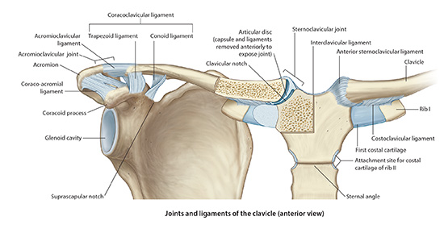

Lab2 - Module 2 - Anatomy of the Scapular Region: Page 5 of 7
Joints of the Shoulder Complex
|  |
| Tap on image to enlarge |
| Begin with the Bones and Joints of the shoulder. |
| Investigate the Sternoclavicular joint. |
| Sternoclavicular Joint - It is a diarthrodial joint that is the only connection between the upper extremity and the trunk. The proximal end of the clavicle articulates with the manubrium of the sternum. The two articulating surfaces are saddle shape. Congruence and stability of the two surfaces is improved by an intraarticular disc. It is a fibrocartilage disk that acts to absorb stress and strain around the joint. There is a weak joint capsule around the joint that is reinforced by the anterior and posterior sternoclavicular ligaments. |
| Anterior sternoclavicular ligament- it is the strongest of the two ligaments, probably because it is reinforced with the tendon of the sternocleidomastoid muscle. The anterior and posterior sternoclavicular ligaments prevent upward displacement of the medial clavicle as well as inferior displacement of the lateral clavicle. This is because the fibers of the ligament run superiorly from the attachment on the sternum to insert on the superior aspect of the clavicle. There is also an interclavicular ligament that passes from the superiomedial aspect of each clavicle to attach on the upper border of the manubrium. Helps resist superior translation of the clavicle. |
| Costoclavicular ligament runs from the first rib laterally to the clavicle. There is an anterior and a posterior portion. It is very important for the stability of the joint because it counteracts the pull of the sternocleidomastoid muscle on the clavicle. |
| Injuries to the sternoclavicular joint are uncommon, particularly dislocations. Dislocations generally are anterior or posterior in nature. Posterior dislocations are considered a medical emergency because of the potential impingement of the mediastinal and cervical structures that run in this area. Compression of the trachea and/or esophagus is also a potential serious complication of a posterior dislocation. |
| Acromioclavicular Joint - Diarthrodial, synovial joint that is made up of the lateral end of the clavicle articulating with the medial border of the acromion process. There is a small fibrocartilage disc within the joint. In contrast to the disc of the SC joint, though, it is meniscoid shape. |
| Investigate the Acromioclavicular joint. |
| The AC joint is enclosed with a joint capsule. This capsule is reinforced with the superior and inferior acromioclavicular ligaments. The joints integrity is mostly dependent on the superior acromioclavicular ligament and the attachment of the deltoid muscle and the trapezious muscle. |
| The coracoclavicular ligament is an extra-capsular ligament that also helps maintain the integrity of the joint. This ligament is separated into two distinct portions: |
| The Conoid- which is a cone shape ligament that runs from the coracoid process to the conoid tubercle of the clavicle. This portion of the ligament also plays a vital role in the biomechanics of the shoulder as well see later. |
| Trapezoid- this portion arises from the coracoid process and inserts on the trapezoid line of the clavicle, just lateral to the conoid tubercle. It plays mostly a stabilizing role. |
| The coracoacromial ligament runs from the superior, lateral coracoid process to the acromion, just anterior to the AC joint. This ligament does not play a role in AC joint stability. It acts as a counter balance to the pulling forces placed on the coracoid process by the pectoralis minor and coracobrachialis muscles. The most significant role this ligament seems to play is in the pathology of impingement syndrome. This ligament forms the “roof” of the shoulder and has been implicated as one of the primary players in subacromial bursitis and rotator cuff tendonitis. |
| Investigate the Scapulothoracic Articulation. |
| Scapulothoracic Articulation - The gliding of the concave shaped scapula on the convex shaped rib cage is commonly called the scapulothoracic joint, however, it does not demonstrate all the traditional components of a joint. In fact, the only relation it has to a joint is it articulates, therefore, it is more correctly called the scapulothoracic articulation. |
| This articulation is extremely important in maintaining, and allowing, stability of the upper extremity. The scapulothoracic articulation contributes largely to the overall range of motion (ROM) of the shoulder, as we will see later. The movement of the scapulothoracic articulation along with the glenohumeral joint in contributing to shoulder ROM has been termed the “scapulohumeral rhythm. Scapulothoracic rotation contributes approximately 60° of motion out of the 180° of motion available at the shoulder |